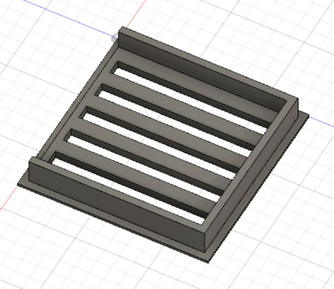

Designer's personal statement
The following projects were designed in open source software, as I am a self-taught 3D & 2D modeler. My initial interest in digital modeling was sparked by my areas of professional study (art and engineering) and has developed to an intermediate level of proficency. I can comfortably design in several environments for projects involving 3D printing, animation, game design, and architecture.
3D Digital Design
Autodesk Fusion 360
This was the first 3D modeling suite I learned to use and it has since helped me design many techinical prints to support my engineering projects.
Blender
I first downloaded Blender in middle school when I learned about open source development suites, and quickly found it to be unruly. Since then I've gained more patience with myself and the learning process, and I'm happy to say I'm finally creating my own models! Next up, animations?
SketchUp
Sketchup is a free web-based design suite for contractors and architects. It's simple interface made it easy to learn, and has been great for modeling large technical structures such as buildings.
Unreal Engine 4
To be updated soon!
2D Digital Design
Krita
Another great open source software, Krita! I'm still becoming familiar with translating my knowlege of 2D design to this virtual format, but it's been fun to play with.